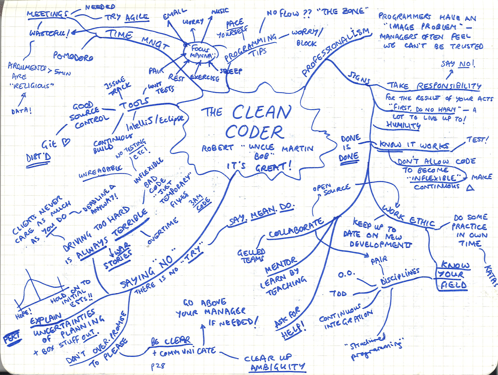

Be a Coding Professional
I was looking back through my mindmaps and came across this one, which I made when I first read "The Clean Coder" by 'Uncle' Bob Martin. I remember the book fondly and thought it might be fun to do a proper review.

Overall Impressions
The Clean Coder is a great read - Martin is a legend for a reason and his writing style is compelling, fun and readable. As the subtitle of my mindmap says, it's great! The book surprised me because it's not really about the mechanics of writing good code - it's all about professionalism (the 'clean' part) and having a set of ethics as someone who works in software. Martin uses some funny and horrifying war stories from his experiences as a novice programmer-for-hire to flesh out the book and explain what can happen when you don't have robust professionalism in your practice. I found myself nodding along as he described the team dynamics behind giving bad time estimates for completing a project, and how one of the most professional things you can do is sometimes to say "no" to tasks.
There is no "try".
He also has some very insightful things to say about the dark side of 'Agile' practices, and how driving too hard toward a goal just-this-once is never a good idea. If nothing else, he points out, it doesn't even get you what you wanted! The code produced in those sort of conditions is invariably horribly flawed "3am code" and/or turns out to solve the wrong problem because those creating it were too busy trying to push something out the door to pay attention to the changing needs of their client. I'm reminded of this blog post from On Food and Coding:
With a given division of labour and a given level of skill, the proprietor can keep more money for themselves if they can get their staff to work for longer each day or to work with greater intensity. And when we deconstruct the terminology used by the most popular Agile process, Scrum, we find an unfortunate allusion to work at a greater intensity. For example, the week-by-week cycle of development is called an "iteration" in practically every other software process, including Extreme Programming. In Scrum this time period is called a Sprint. What associations does that conjure up? Well when you sprint you make an extreme effort to go as fast as possible, an effort that you can only keep up for a short time. That's what "sprint" means in everyday life.
Martin viscerally describes the sort of race-to-the-bottom conditions that this, coupled with optimistic overestimation of one's own ability to finish tasks, can induce.
Some reservations
One thing I disagree with is the amount of time he suggests allotting to your own personal practice - pairing with new people, doing Code Katas, listening to podcasts on software, picking up a new language, generally honing your craft. I absolutely think it's important to make sure you do some of this stuff outside of work - one of the reasons I started this blog is to motivate myself to learn more by providing a place to write about what I'm learning and have some accountability. But the time he suggests blocking out (20 hours!) is just unrealistic for most people. I think this very high bar is more likely to discourage would-be software folks from jumping into the field. I think understanding more about Martin's background explains where this comes from - he has a typically American 'Sleep is for the Weak!' attitude which has only partly been mollified by his realisation that if you work for too long, you stop producing things of worth because you're unable to concentrate well enough. Martin doesn't quite go far enough with his observations on 'Focus manna' to encompass leisure-time programming as well. Following his arguments, I have limited time in the week to practice my craft before I'm too tired for it to be of use - and I'm sure that line falls in different places for different people.